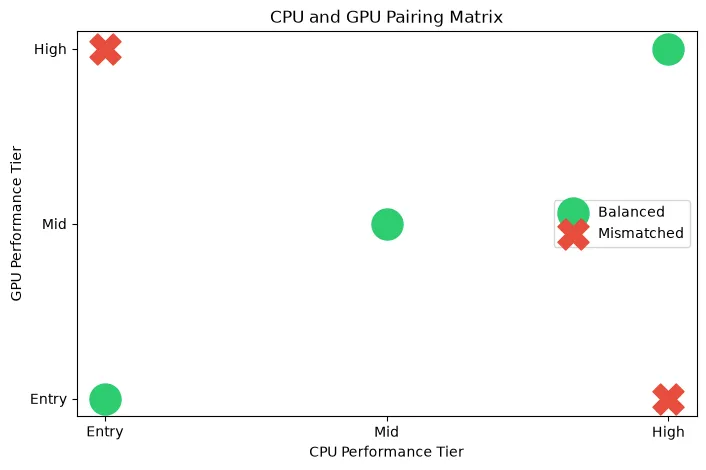
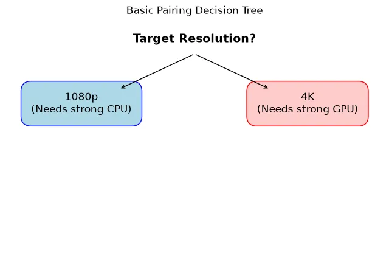
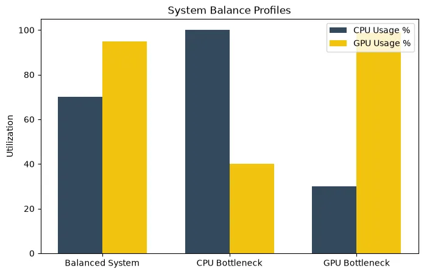

CPU GPU Compatibility: How to Choose the Right Pair for Your Gaming PC
Building a balanced PC requires pairing the right processor with the right graphics card. Learn the difference between physical compatibility and performance balance, and how to avoid costly bottlenecks.
When planning a new gaming PC or upgrading an old one, the most critical decision you will make is choosing your CPU and GPU. Get this pairing wrong, and you could spend hundreds of dollars on top-tier hardware that sits idle due to a severe system bottleneck.
In this guide, we will break down what CPU/GPU compatibility actually means, why you shouldn't blindly pair a budget CPU with a high-end GPU, and how to choose the right combination based on your target resolution and game type.
Quick Answer / TL;DR
Physical CPU and GPU compatibility is universal; any modern GPU (PCIe) will plug into any modern motherboard and work with the CPU. However, performance compatibility (balance) is crucial. A balanced pairing ensures neither component waits for the other. Choose your pair based on your monitor: 1080p high-refresh gaming requires a top-tier CPU, while 4K gaming requires a top-tier GPU with a mid-range CPU.
Physical Compatibility vs. Performance Balance
First, let's clear up a common misconception for new builders.
Physical Compatibility: A graphics card connects to the motherboard via a PCIe (Peripheral Component Interconnect Express) slot. This standard has been universally adopted for decades. Whether you have an Intel CPU or an AMD CPU, you can use an NVIDIA GPU, an AMD GPU, or an Intel GPU. They are all physically compatible.
Performance Balance: This is what truly matters. Performance compatibility means ensuring your CPU is fast enough to feed data to your GPU, and your GPU is powerful enough to handle the frames the CPU generates. A mismatch here creates a CPU or GPU bottleneck.

How to Choose the Right Pair: The 4 Key Factors
You cannot choose a balanced CPU/GPU pairing in a vacuum. You must define your goals based on four criteria:
1. Target Resolution
As we explored in our resolution bottleneck guide, your monitor dictates hardware requirements.
- 1080p: Low GPU strain, high CPU strain. You need a fast processor.
- 1440p: Balanced workload. A mid-tier CPU and upper-mid-tier GPU is ideal.
- 4K: Massive GPU strain, low CPU strain. You need the most powerful GPU you can afford; the CPU is secondary.

2. Target Refresh Rate (FPS)
If you play single-player RPGs on a 60Hz monitor, a budget modern CPU (like an Intel Core i5 or Ryzen 5) is perfectly adequate. However, if you are a competitive gamer on a 240Hz or 360Hz monitor, generating 300+ frames per second requires a massive amount of CPU horsepower (like an AMD X3D processor).
3. Game Type
Different game engines stress hardware differently.
- Esports (Valorant, CS2, Overwatch): Very light on the GPU, incredibly heavy on the CPU.
- AAA Titles (Cyberpunk 2077, Alan Wake 2): Heavy on the GPU, especially with Ray Tracing enabled.
- Simulation/Strategy (Cities: Skylines, MSFS): Heavy on the CPU and System RAM.
4. Productivity and Streaming
If you stream your gameplay via OBS, edit 4K video, or compile code, you will need a CPU with a higher core count (Intel Core i7/i9 or Ryzen 9). If you are purely gaming, a 6-core or 8-core processor is usually the most cost-effective choice.
Practical Example Scenarios
Important Note: The following are conceptual examples of balanced pairings for specific workloads. Always check current independent benchmarks for exact performance data before purchasing.
Scenario A: Budget 1080p Gaming
Goal: 60-100 FPS in modern games on a tight budget.
Balance: An entry-level CPU (e.g., modern 4 or 6-core) paired with an entry-level 8GB GPU. This provides a balanced experience without overspending on a processor that a budget GPU cannot fully utilize.
Scenario B: High-Refresh 1080p Esports
Goal: 300+ FPS in competitive shooters.
Balance: A high-end, high-cache CPU (e.g., Ryzen X3D series) paired with a mid-range GPU. Because the graphics are usually turned to "Low" in esports, the GPU load is tiny, making the CPU the sole dictator of maximum frame rates.
Scenario C: 1440p AAA Gaming (The Sweet Spot)
Goal: 100+ FPS in beautiful single-player games.
Balance: A mid-range 6 or 8-core CPU paired with a high-end GPU. At 1440p, the graphics card does the heavy lifting, making an expensive flagship CPU unnecessary for most users.
Scenario D: 4K Visual Fidelity
Goal: 60+ FPS at maximum settings with Ray Tracing.
Balance: A mid-range CPU paired with an ultra-high-end flagship GPU (e.g., RTX 4090). At 4K, you should dedicate 50-60% of your entire PC build budget to the graphics card.

Other Compatibility Considerations
When pairing a CPU and GPU, remember to check the rest of your system:
- Power Supply (PSU): A high-end CPU and GPU combination can draw over 600 watts under load. Ensure you have a high-quality, high-wattage PSU to handle the transient power spikes.
- Cooling and Case Airflow: High-end components generate massive heat. A cramped case with poor airflow will cause your balanced components to thermal throttle, destroying performance.
- VRAM and RAM: Ensure your GPU has enough VRAM for your target resolution, and your system has enough RAM capacity to feed the CPU.
How the Bottleneck Calculator Can Help
Checking performance compatibility manually requires reading dozens of benchmark reviews. To get a quick estimate, use our CPU GPU Compatibility Checker (Bottleneck Calculator).
Enter your planned CPU, planned GPU, and intended monitor resolution. The calculator will provide an estimate of which component will be the limiting factor. If the calculator shows a massive CPU bottleneck (e.g., >20%), you should consider downgrading the GPU or upgrading the CPU to achieve better balance.
Frequently Asked Questions
Can I put an AMD GPU with an Intel CPU?
Yes. There are no physical or software restrictions preventing you from pairing an AMD graphics card with an Intel processor, or an NVIDIA graphics card with an AMD processor. They will work perfectly together.
Is it better to have a better CPU or GPU for gaming?
For 90% of gamers playing at 1440p or 4K, it is much better to have a stronger GPU. The graphics card is the primary driver of visual fidelity and frame rates at higher resolutions. The only exception is 1080p high-refresh-rate esports gaming, where a fast CPU is critical.
What is a good CPU GPU combo right now?
This changes with every hardware generation. Generally, pairing a current-generation mid-tier CPU (like a Ryzen 5 or Core i5) with a current-generation mid-tier GPU (like an RTX 4070 or RX 7800 XT) provides excellent 1440p balance.
Final Takeaway
Don't buy hardware based on brand loyalty or raw price tags. Define your monitor resolution, define your target frame rate, and choose a CPU and GPU combination that balances the workload. A well-paired mid-range system will often provide a smoother, more stutter-free gaming experience than a poorly paired high-end system.